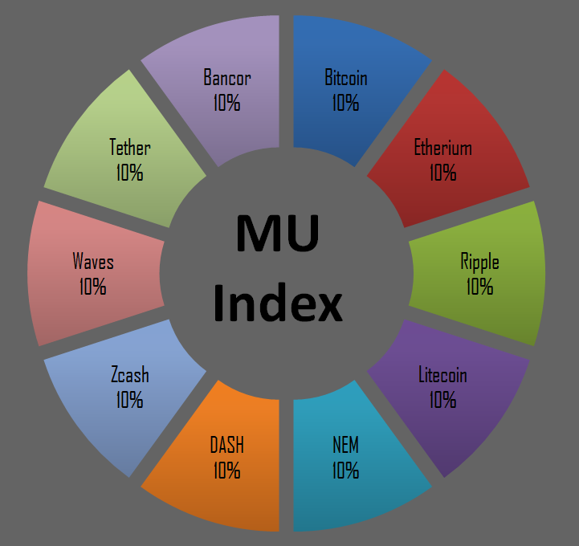

- Схема разделения рынка по типу (Золото\Серебро\Остальные)
- Золото - №1, хотят все, каждый год растет, рост сложности геометрический, неудобно использовать, консервативно
- Серебро - рост сложности вполовину меньше роста капитализации, моментальные транзакции, не особо выгодно хранить, удобно использовать
- Другие - узкоспециализированные, внутренняя валюта крупных компаний
Вехи
- Капитализация рынка криптовалют = Капитализации крупнейшей компании мира
- Передел рынка и постепенный рост.
- Непрерывное бурление рынка и борьба за первые 2 места по капитализации
- Активный пиар,завоевание новых рынков и пользователей
- Очень быстро растет количество и капитализация внутренних валют крупных бизнесов
- Конкуренты Золота и Серебра умирают
- Крупный бизнес скрытно использует криптовалюту
- Банки подстраиваются
- Крупные чиновники скрытно используют криптовалюту
- Капитализация лидера = 1 000 000 000 000$
- Капитализация лидера = 10 000 000 000 000$
- Крупный бизнес открыто использует криптовалюту
- Крупные чиновники открыто используют криптовалюту
- Больше чем в 10% магазинов принимают криптовалюту